3주차 · 앙상블 알고리즘
Bagging · Random Forest
Boosting · GBM
나무 한 그루는 약하다. 그래서 숲을 만든다.
한양대학교 도시공학과 · 05_Bagging_RF.ipynb · 06_Boosting.ipynb · 06-2_모델비교.ipynb
ENSEMBLE MODEL
2개 이상의 학습 모델을 결합하는 메타 알고리즘
VOTING
결론을 셀 것인가, 확신을 더할 것인가
BIAS–VARIANCE TRADE OFF
빗나갔나,
흩어졌나
편향(Bias) — 중심에서 얼마나 벗어났나
분산(Variance) — 얼마나 흩어졌나
깊은 나무 한 그루는 Low Bias · High Variance. 데이터가 조금만 바뀌어도 전혀 다른 나무가 된다.
이 분산을 줄이려고 여러 그루를 모은다.
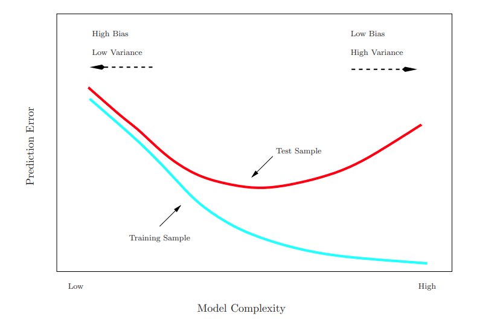
Prediction Error vs Model Complexity
ERROR–COMPLEXITY
훈련 오차와
테스트 오차
왼쪽 = High Bias · 오른쪽 = High Variance.
앙상블은 오른쪽에서 시작해 분산을 깎아 빨간 곡선의 바닥으로 내려오는 전략이다.
여기서 한 번 막힌다
데이터는 한 벌뿐인데
여러 모델을 어디서 구하지?
같은 데이터로 같은 알고리즘을 돌리면 매번 똑같은 나무가 나온다. 똑같은 것 백 개를 모아 봐야 한 개와 같다.
데이터를 바꾼다
앙상블이 고른 길 — 다음 두 장
재표집 ①
K-fold Cross Validation
전체를 K등분해서 한 칸씩 돌아가며 테스트로 쓴다
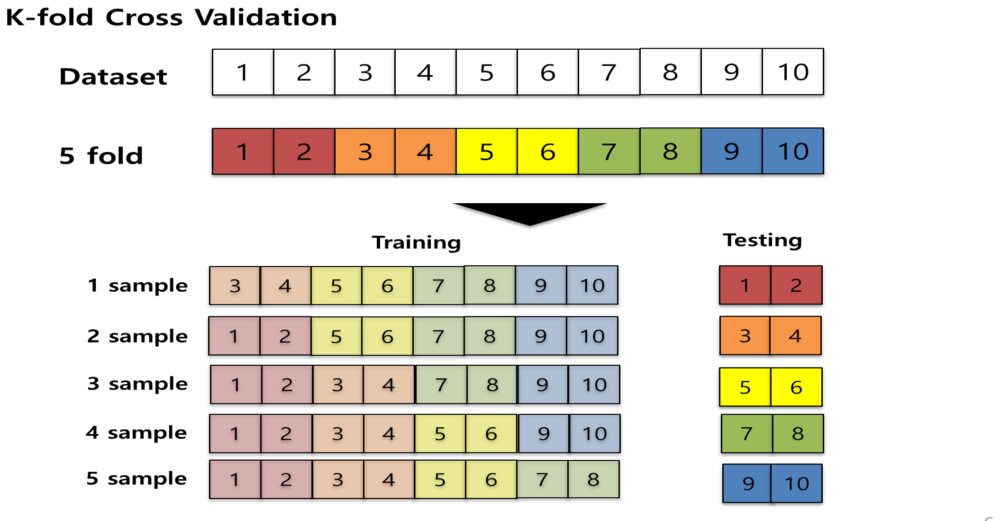
K-fold 원본 도해 — 10개를 5등분해 다섯 벌의 훈련·테스트 조합을 만든다
한 칸씩 돌아가며 테스트로 쓴다 — 겹치지 않게 나누고, 데이터를 아껴 쓴다.
뽑고 다시 넣는다 — 그래서 표본을 무한히 만들 수 있다
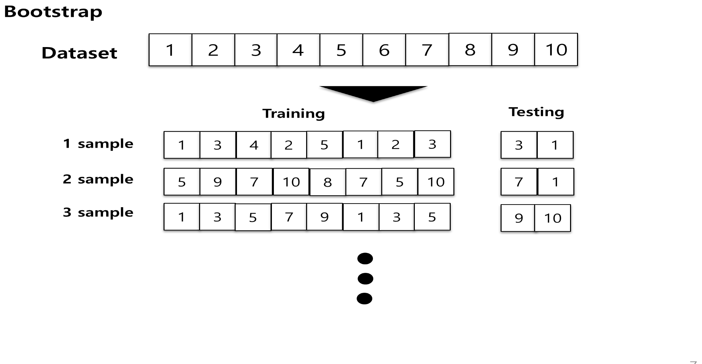
Bootstrap 원본 도해 — 같은 데이터가 여러 번 뽑히고, 안 뽑힌 것이 테스트가 된다
뽑고 다시 넣는다. 같은 데이터가 두 번 들어갈 수 있고, 안 뽑힌 것은 그 모델의 테스트가 된다.
BOOTSTRAP AGGREGATING
Bagging
- 부트스트랩으로 표본을 여러 벌 만든다
- 표본마다 나무를 하나씩 심는다
- 마지막에 투표시킨다
Breiman, L. Bagging Predictors. 1994 / Machine Learning 24, 123–140 (1996)
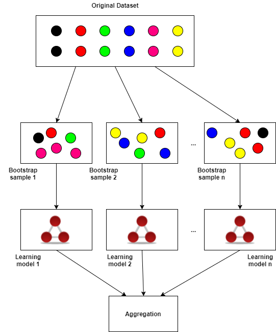
Bagging 다이어그램 — Bootstrap sample n → Learning model n → Aggregation
BAGGING
배깅은 행만 뽑는다
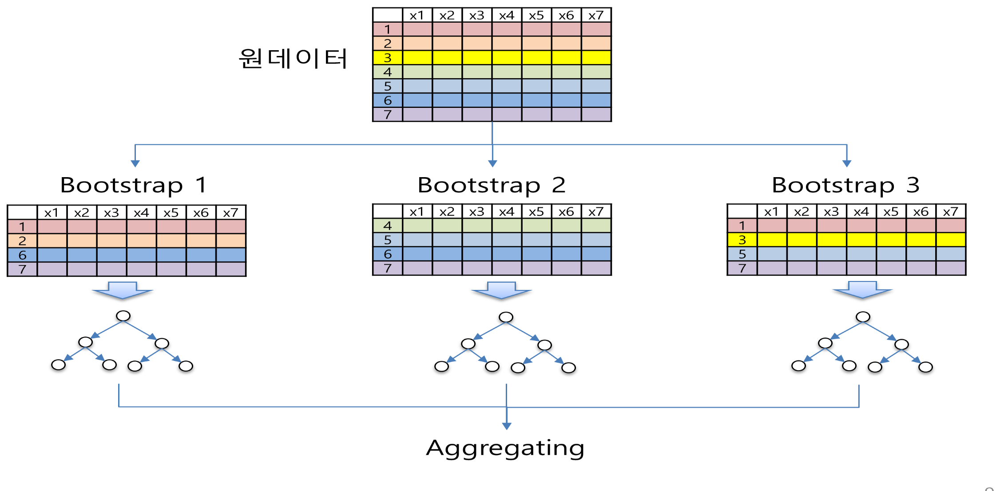
원데이터에서 부트스트랩 세 벌을 뽑아 나무를 셋 심고 합치는 도해
변수는 전부 그대로다. 그래서 강한 변수가 하나 있으면 모든 나무가 그걸 첫 분기로 쓴다 — 나무들이 서로 닮는다.
RANDOM FOREST · 2001
랜덤 포레스트는 열도 뽑는다
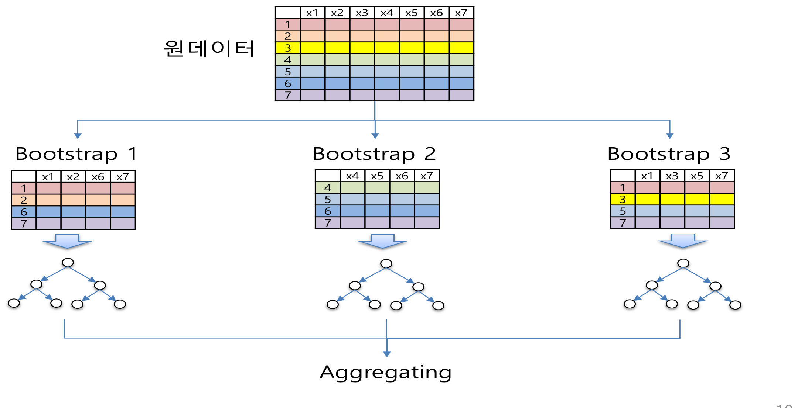
부트스트랩마다 쓰는 변수 열까지 달라지는 랜덤 포레스트 도해
어떤 나무는 강한 변수를 아예 못 받는다. 일부러 약하게 만들어 서로 다르게 하고, 그 다양성이 분산을 더 줄인다.
PART 2
Boosting
나란히 모으는 대신 — 앞이 틀린 것을 다음이 맡는다.
AdaBoost
GBM
XGBoost · LightGBM · CatBoost
ADAPTIVE BOOSTING · 1997
약한 것을 이어
강한 것을 만든다
약한 분류기(weak learner)를 여러 개 연결하여 강한 분류기(strong learner)를 생성하는 메타 알고리즘.
핵심은 5번과 6번 — 모델마다 가중치를 매기고, 틀린 데이터가 뽑힐 확률을 올린다.
같은 것을 수식으로
Hastie, Tibshirani, Friedman. ESL Algorithm 10.1
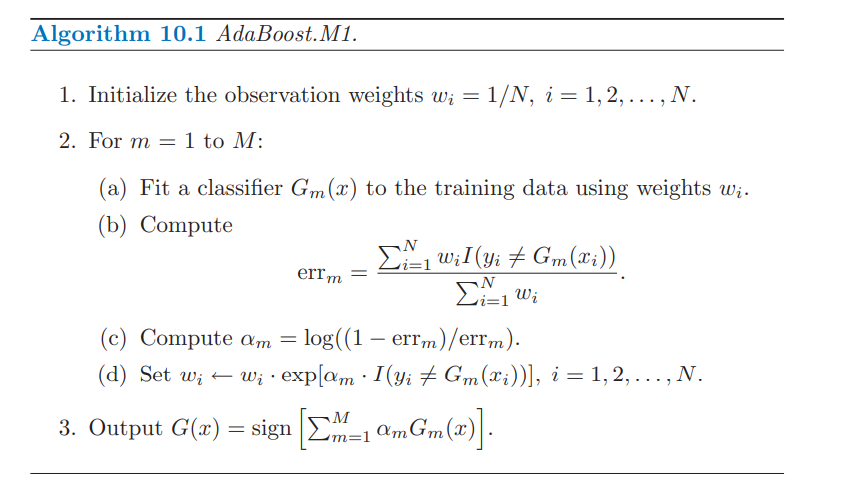
Algorithm 10.1 AdaBoost.M1
마지막 줄 — G(x) = sign[ Σ αₘGₘ(x) ]. 각 모델의 예측에 그 모델의 가중치를 곱해 더한 뒤 부호를 본다.
실습 데이터
S-DoT
도시 열섬
x — 센서 반경 내 도로 면적 비율
y — 센서 반경 내 대지 면적 비율
색 — 주변보다 더운가(고온) / 아닌가(저온)
데이터 1,031개. 빨강과 파랑이 뒤섞여 있어 직선 하나로는 못 가른다.
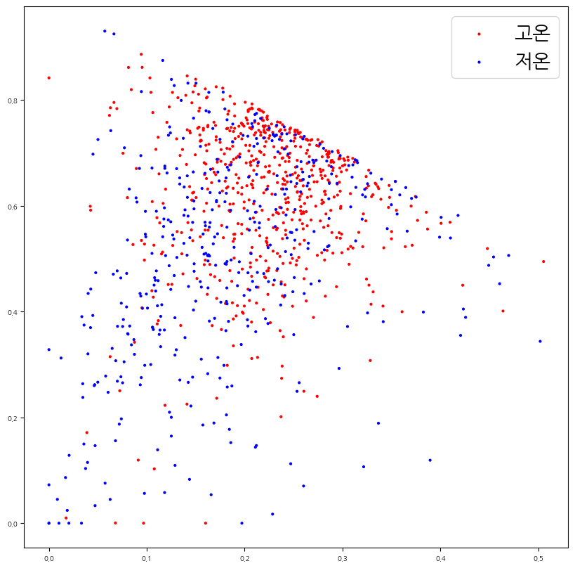
S-DoT 고온/저온 산점도
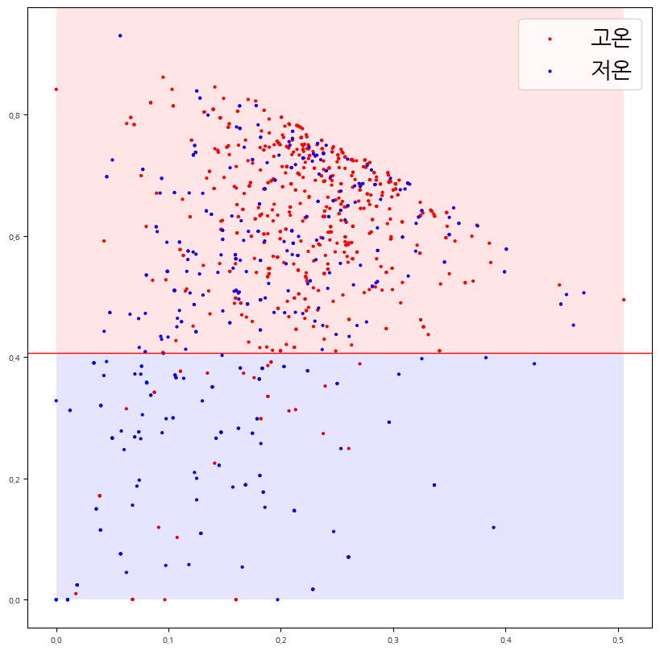
Stump Tree 결정 경계 — 대 0.4067에서 가로 분할
WEAK LEARNER
깊이 1짜리
Stump Tree
대 < 0.4067
데이터 177개 · 고온 34 (0.19) · 저온 143 (0.81)
대 > 0.4067
데이터 854개 · 고온 560 (0.66) · 저온 294 (0.34)
한 번만 자른다. 잘 맞히지도 못한다. 이 못난 것들을 이어 붙일 것이다.
MODEL WEIGHT
잘 맞힌 모델에
발언권을 준다
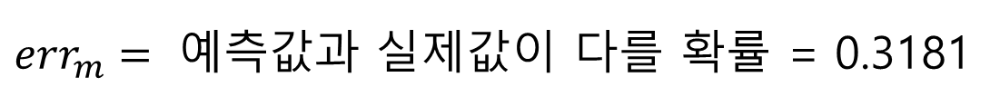
err = 예측값과 실제값이 다를 확률 = 0.3181
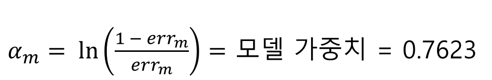
α = ln((1−err)/err) = 0.7623
오차 0.5 면 α = 0 — 동전 던지기와 같으니 발언권이 없다.
0.5 보다 나쁘면 α 가 음수 — 반대로 뒤집어 쓴다.
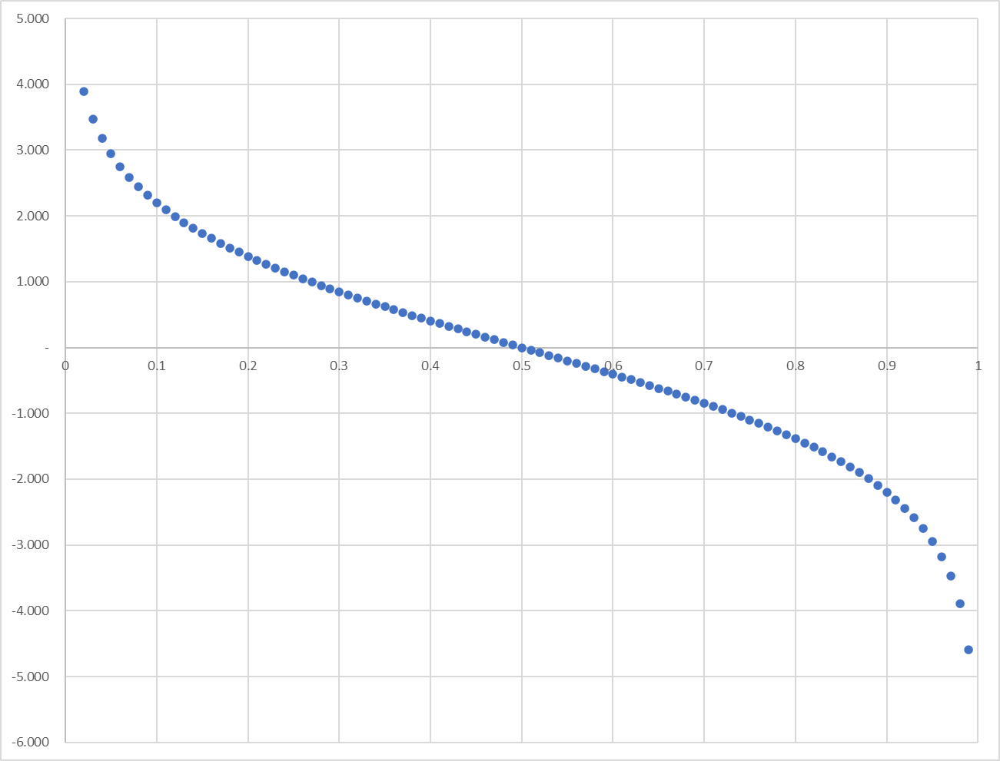
err 에 따른 α 곡선
틀린 데이터만 2.14배
wᵢ ← wᵢ × exp[α × I(yᵢ ≠ Gₘ(xᵢ))]
wi = wi × exp[α × I(yi ≠ Gm(xi))]
y · y_pred · exp 항
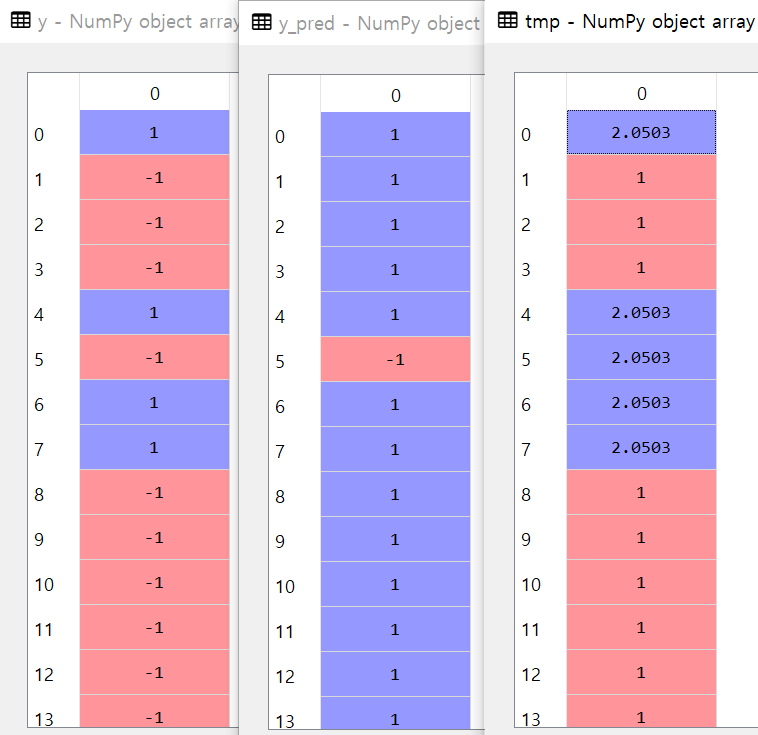
y / y_pred / tmp 배열
갱신된 가중치
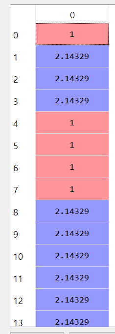
1 또는 2.14329
맞은 것은 1, 틀린 것은 exp(0.7623) = 2.14329. 다음 판에서 그만큼 더 자주 뽑힌다.
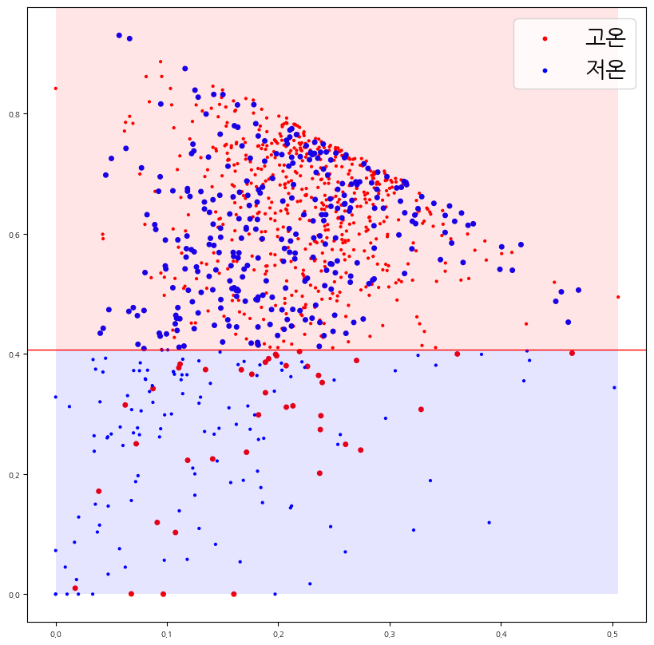
오답 데이터의 가중치가 커진 산점도
오답 데이터의 가중치 증가
점이 커진다
점 크기가 곧 가중치다. 첫 모델이 틀린 것들만 커졌다.
다음 스텀프는 이 커진 점들을 맞히려고 다른 자리를 자를 수밖에 없다. 이게 “Adaptive” 다.
자르는 자리가 계속 바뀐다
20번 반복 중 앞 8개
뒤로 갈수록 남은 오답이 어려워진다 → 정확도가 떨어지고 발언권도 줄어든다.
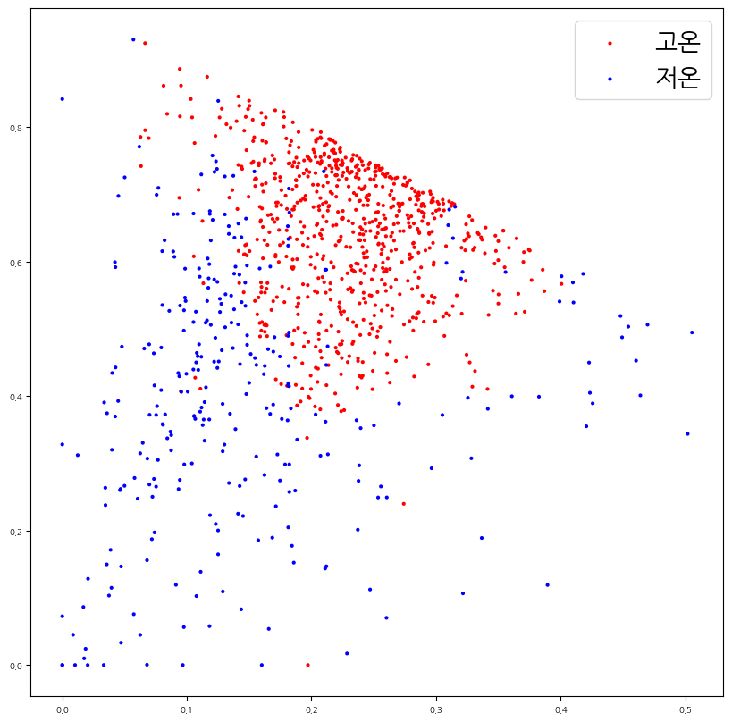
AdaBoost 최종 결정 경계
최종 모델
직선 100개를 더하면
곡선이 된다
G(x) = sign[ Σ αₘ Gₘ(x) ]
개별 모델의 예측값(+1 / −1)에 그 모델의 가중치를 곱해 합한 뒤, 0을 기준으로 부호를 본다.
FEATURE IMPORTANCE · LEARNING RATE
중요도도 가중합이다
AdaBoost feature importance
= 개별 모델의 feature importance × 그 모델의 가중치
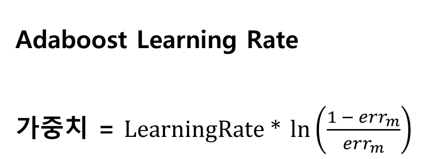
Adaboost Learning Rate — 가중치 = LearningRate × ln((1−err)/err)
학습률은 α 앞에 곱하는 상수다. 작게 주면 모델마다의 발언권을 깎아 천천히 간다.
무엇이 다른가
다음 판을 어떻게 만드나
AdaBoost
Weak learner 를 연결하여 예측
이전 모델의 오분류 데이터에 가중치를 부여하여 학습 데이터셋을 추출
GBM
Weak learner 를 연결하여 예측
Gradient Descent(경사 하강) 개념을 통해 다음 학습 데이터셋을 생성
그럼 경사 하강이 뭔지부터 봐야 한다.
GRADIENT DESCENT ①
아무 값에서
시작한다
찾을 것은 α 하나. 정답을 모르니 임의로 2 를 잡는다.
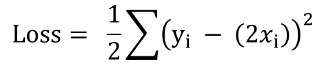
Loss = ½Σ(yi − 2xi)²
GRADIENT DESCENT ②
얼마나
틀렸나
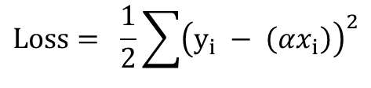
Loss = ½ Σ(yi − αxi)²
α = 2 일 때 Loss
5,081
전부 넣어보면 4~5 근처가 바닥이다. 그런데 이렇게 다 해보는 건 변수가 하나일 때나 가능하다.
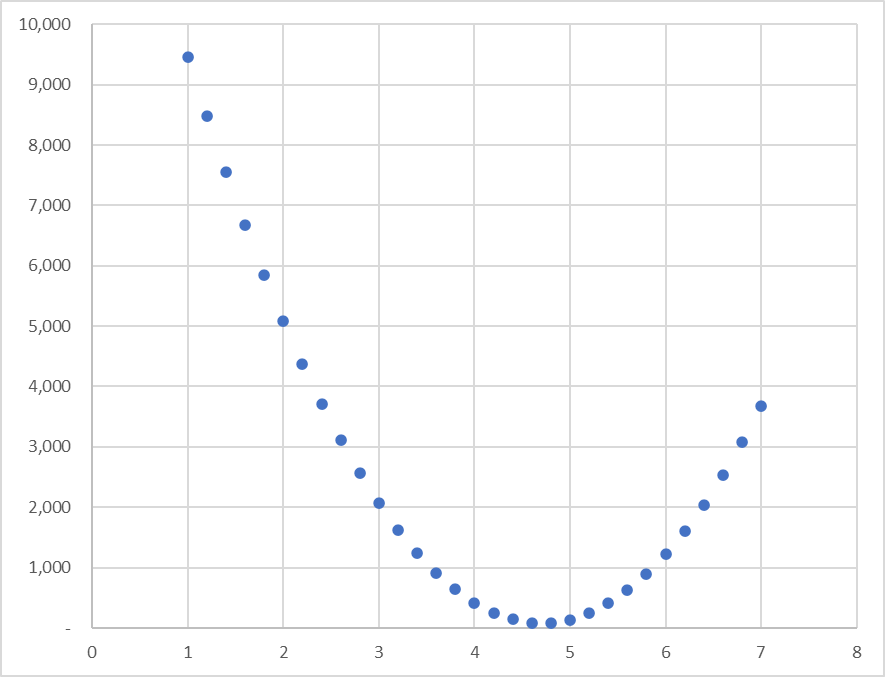
α 에 따른 Loss 곡선
GRADIENT DESCENT ③
미분해서
반대로 간다
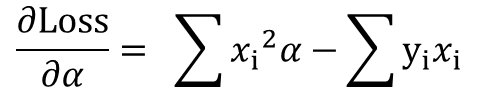
∂Loss/∂α = Σxi²α − Σyixi
경사의 반대 방향으로 조금씩 움직인다.
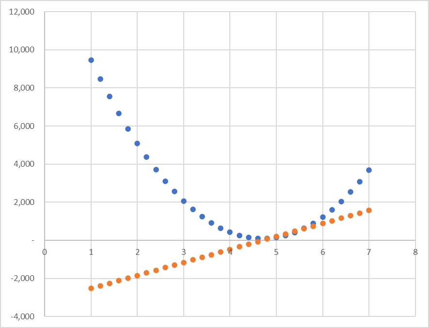
Loss 곡선과 그 미분값
GBM 에서의 경사 하강
경사의 반대 방향 = 잔차
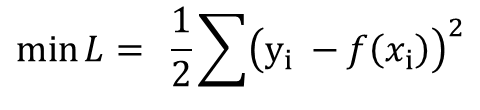
min L = ½Σ(yi − f(xi))²
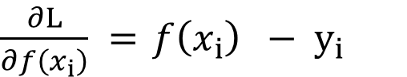
∂L/∂f(xi) = f(xi) − yi
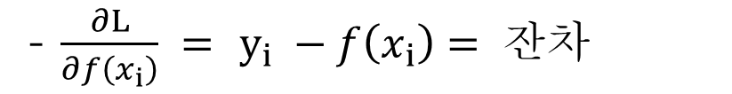
−∂L/∂f(xi) = yi − f(xi) = 잔차
그래서 다음 모델은 잔차를 예측하도록 학습시킨다. 이것이 Gradient Boosting 이라는 이름의 이유다.
GBM Algorithm
Friedman, J. H. Greedy Function Approximation. Annals of Statistics 29(5), 2001
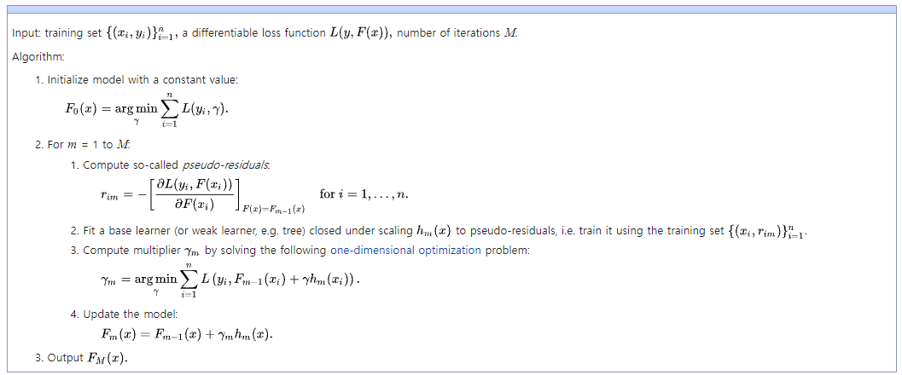
GBM 알고리즘 의사코드
1번은 상수 하나로 시작 — 회귀면 그냥 평균이다. 2-1이 유사 잔차, 2-2가 그 잔차에 나무를 맞추는 단계다.
Loss 를 바꾸면 잔차가 바뀐다
미분만 되면 무엇이든
연속형 — L2 · L1 · Huber · Quantile
범주형 — Bernoulli · AdaBoost
이상치가 많은 도시 데이터에서 L2 는 이상치에 끌려간다 — Huber 를 쓰는 편이 낫다.
Natekin & Knoll. Gradient boosting machines, a tutorial. Front. Neurorobot. 7:21 (2013)
GBM 은 계단을 그린다
S-DoT 온도차이 vs 도로면적 비율 · 1,031개
실제 데이터 1,031개
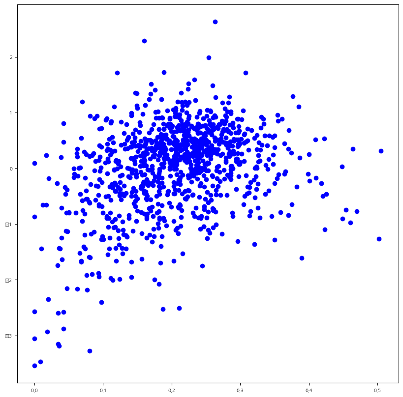
도로비율 vs 온도차이 산점도
GBM 활용
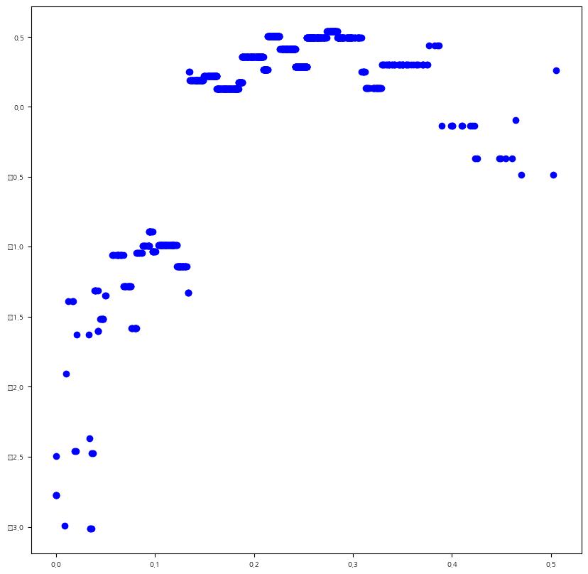
GBM 예측값 — 계단 모양
나무는 구간을 나누고 그 안에서 평균을 낼 뿐이다. 그래서 회귀선이 아니라 계단이 나온다.
LEARNING RATE
얼마나 갈 것인가
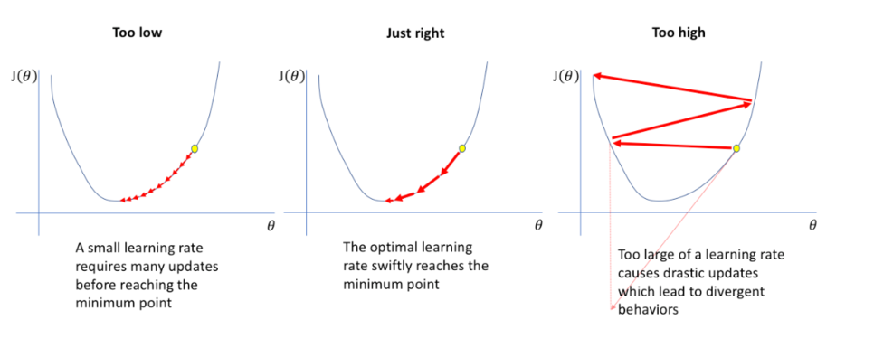
Learning rate — too low / just right / too high
너무 작으면 한참 걸리고, 너무 크면 골짜기를 건너뛰어 발산한다. 실무에서는 작게 두고 나무를 많이 쓴다.
OVERFITTING
잔차를 계속 쫓으면
외워 버린다
① 학습률(shrinkage) — 모델이 더해질수록 영향력을 수축
② subsample — 배깅처럼 데이터 일부만 써서 제어
③ max_features — 랜덤 포레스트처럼 변수 일부만
결국 배깅과 랜덤 포레스트의 아이디어를 부스팅 안으로 가져온 것이다.
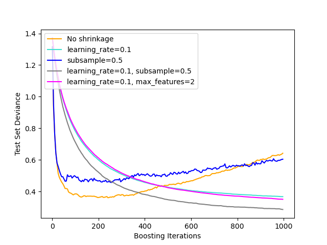
shrinkage / subsample / max_features 별 Test Set Deviance
실무에서 쓰는 것
새 알고리즘이 아니라 빠른 구현이다
XGBoost2016
대용량에서 GBM 등을 빠르게 병렬 수행하도록 만든 오픈소스.
xgboost.readthedocs.io
LightGBM2016
Microsoft. 대용량 GBM 을 더 빠르게 돌리는 프레임워크.
github.com/microsoft/LightGBM
CatBoost2017
러시아 Yandex. 범주형 변수를 그대로 다룬다.
catboost.ai
도시 데이터는 행정동·용도지역 같은 범주형이 많다 — CatBoost 를 한 번 써 볼 만하다.
분석 결과 종합 · 06-2_모델비교.ipynb
학습 100% 가 좋은 모델이 아니다
Dtree 는 학습을 100% 외우고 테스트는 67.63% 로 꼴찌. AdaBoost 는 학습이 75.36% 뿐인데 테스트는 78.26%.
정리
약한 것을 모으는 두 가지 길
나란히 — 분산을 줄인다
Bagging 행을 뽑아 여러 나무 → 투표
Random Forest 열까지 뽑아 더 다르게
이어서 — 편향을 줄인다
AdaBoost 틀린 데이터의 확률을 올린다
GBM 잔차를 다음 모델이 예측한다
다음 주 — 인공신경망. 나무를 모으는 대신 함수를 겹치는 길로 간다.
실습: 05_Bagging_RF.ipynb · 06_Boosting.ipynb · 06-2_모델비교.ipynb